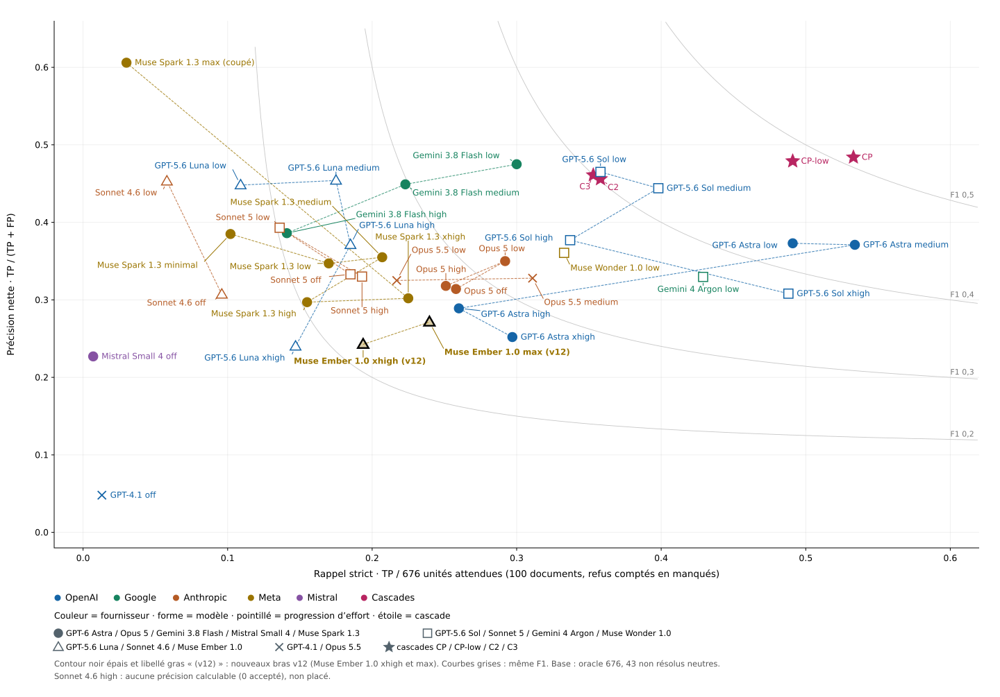
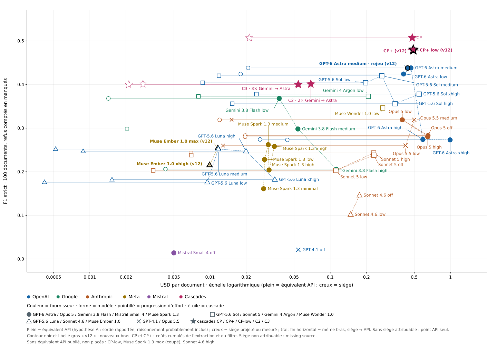
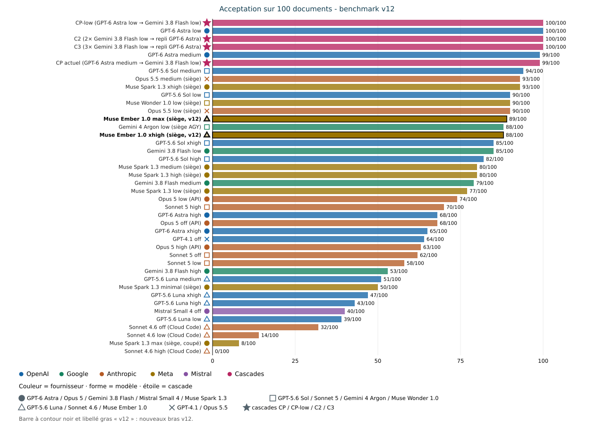
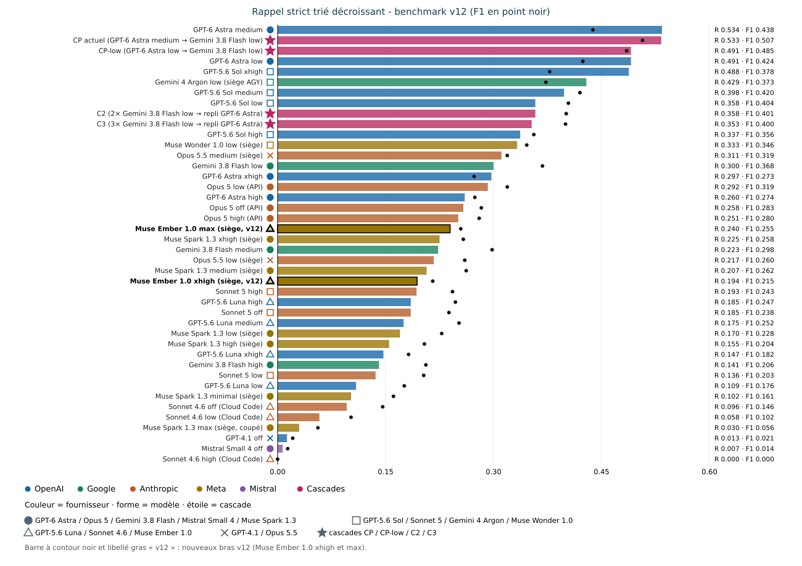

Benchmark v12 · Rapport complet · 13 novembre 2026
Rédaction : lane benchmark B (conductor i-cond) ; base v11 (9 novembre 2026), v10 (v101b, oracle 674) et v11alpha (oracle 676, #725).
Ce qui change depuis v11 (dossier benchmark-v11-2026-11-09, laissé intact) :
- deux nouveaux bras, Muse Ember 1.0 xhigh et Muse Ember 1.0 max (muse-ember-1.0, siège Muse), mesurés selon la même méthode, pour évaluer un secours du refresh après le retrait de Gemini (exécution 2026-11-13 UTC) ;
- les quatre graphiques reprennent le style du v10 (v101b) : couleur = fournisseur, forme = modèle, pointillé = progression d'effort, étoile = cascade, libellé à côté de chaque point ;
- noms complets des modèles, avec version, dans les tableaux et les graphiques (correspondance en §2) ;
- tableau « Meilleurs bras » ci-dessous, calculé depuis les données.
Toutes les valeurs v11 sont reprises sans modification ; seuls les rangs positionnels sont recalculés sur 42 lignes.
Calculé depuis les 42 lignes du tableau global (§3), oracle 676. Coûts en USD hors taxes par document ; missing source = non mesuré, jamais estimé. Le rapport F1 / coût est F1 strict divisé par le coût par document.
| Critère | Modèle complet | Effort | P | R | F1 strict | Équiv. API USD/doc | USD siège/doc | Valeur |
|---|---|---|---|---|---|---|---|---|
| Meilleur F1 strict (toutes lignes) | CP actuel : GPT-6 Astra → Gemini 3.8 Flash | medium → low | 0.484 | 0.533 | 0.507 | 0.4813 | 0.0212 | F1 0.507 |
| Meilleur rappel strict | GPT-6 Astra | medium | 0.371 | 0.534 | 0.438 | 0.4689 | 0.0207 | R 0.534 |
| Meilleur bras seul (hors cascade), F1 strict | GPT-6 Astra | medium | 0.371 | 0.534 | 0.438 | 0.4689 | 0.0207 | F1 0.438 |
| Meilleur rapport F1 / coût — équivalent API | Muse Ember 1.0 (siège) | max | 0.271 | 0.240 | 0.255 | 0.0116 | missing source | 21.9 F1 par USD/doc |
| Meilleur rapport F1 / coût — siège (lignes avec siège attribuable) | GPT-5.6 Luna | medium | 0.454 | 0.175 | 0.252 | 0.0117 | 0.00052 | 484.6 F1 par USD/doc |
Le socle v11 (sans « alpha ») intègre les lignes v11alpha, le bras Muse Wonder low complet et le nouveau bras Gemini Argon low, selon strictement la même méthode que v11alpha : mêmes prompts gelés (revérifiés count=100, fail=0), même validateur v9 gelé + provenance, même scoreur oracle 676 (43 non résolus neutres). Différence de protocole, déclarée exactement : concurrence 10 pour Muse Wonder low ; pour Gemini Argon low, échantillon final mixte — passage principal en concurrence 10 puis reprises séquentielles des échecs d'infrastructure (140 tentatives, 100 documents distincts réussis, 18 documents repris ; détail §2). Aucune valeur publiée en v10 ou v11alpha n'est altérée ; les nouvelles lignes s'ajoutent.
- Muse Wonder low (muse-wonder-1.0, siège Muse) : 90/100 acceptés, P 0.361, R 0.333, F1 strict 0.346 — rang 12 au tri par rappel.
- Gemini Argon low (gemini-4-argon-low, siège AGY / Gemini Ultra) : 88/100 acceptés, P 0.330, R 0.429, F1 strict 0.373 — rang 6 au tri par rappel.
- Muse Ember 1.0 xhigh (muse-ember-1.0, siège Muse, nouveau en v12) : 88/100 acceptés, P 0.243, R 0.194, F1 strict 0.215 — rang 25 au tri par rappel ; équivalent API 0.00991 USD/doc (jetons réels du bras, n=100) ; USD siège/doc missing source.
- Muse Ember 1.0 max (muse-ember-1.0, siège Muse, nouveau en v12) : 89/100 acceptés, P 0.271, R 0.240, F1 strict 0.255 — rang 20 au tri par rappel ; équivalent API 0.0116 USD/doc (jetons réels du bras, n=100) ; USD siège/doc missing source.
- Secours du refresh sans Gemini (demande owner du 12/11) : Ember n'est pas un remplaçant à qualité égale de Gemini low. Meilleur effort mesuré : max, F1 0,255 contre 0,368 pour Gemini low et 0,346 pour Muse Wonder low ; acceptation élevée (89/100) et équivalent API bas (0.0116 USD/doc). Secours plausible seulement en dernier recours bon marché, derrière Wonder low (détail §8).
- Le combo CP actuel reste en tête en F1 (0,507) ; aucun modèle seul ne l'égale. Le tri du tableau global v12 est par rappel décroissant (consigne du dossier), le F1 reste affiché.
- Coûts : équivalents API calculés depuis les jetons réels et des tarifs publics relevés sur sources secondaires datées (section 6 ; tarifs marqués unverified, aucune page tarifaire primaire citée avec URL exacte). Coût siège Gemini Argon low mesuré par burn /usage : 0,00801 USD/doc (part hebdomadaire mesurée × prix hebdomadaire du palier Google AI Ultra 20x à 199,99 USD/mois ; relevés bruts en section 6). Coût siège Muse Wonder low : missing source (compteur muse usage lu avant/après, bascule partagée avec les sessions du compte, non attribuable — relevés complets en section 6). Rien n'est estimé à la place. Exception v12 : le tarif muse-ember-1.0 est relevé sur la page primaire Meta (§6) ; coût siège Muse Ember 1.0 : missing source (compteur partagé, non attribuable).
- Corpus : 100 documents du manifeste v101b (sha256 PDF vérifiés), prompts gelés sha256 identiques au v10, validation profil v9 + provenance, notation oracle v3 stricte sur oracle 676 (#725, 43 non résolus neutres). Règle « Fair Benchmarking — No Cheating » (rules/MASTER.md) : métriques gelées avant notation, appliquées à l'identique, aucune fabrication, traçabilité complète.
- Noms complets des modèles (v12) — tableaux et graphiques : GPT-6 Astra = gpt-6-astra ; GPT-5.6 Sol = gpt-5.6-sol ; GPT-5.6 Luna = gpt-5.6-luna ; GPT-4.1 = gpt-4.1 ; Gemini 4 Argon = gemini-4-argon-low ; Gemini 3.8 Flash = gemini-3.8-flash ; Opus 5.5 = claude-opus-5-5 ; Opus 5 = claude-opus-5 ; Sonnet 5 = claude-sonnet-5 ; Sonnet 4.6 = claude-sonnet-4.6 ; Muse Spark 1.3 = muse-spark-1.3 ; Muse Wonder 1.0 = muse-wonder-1.0 ; Muse Ember 1.0 = muse-ember-1.0 ; Mistral Small 4 = mistral-small-2603. Cascades : CP actuel = GPT-6 Astra medium puis vérification Gemini 3.8 Flash low ; CP-low = GPT-6 Astra low puis Gemini 3.8 Flash low ; C2 / C3 = Gemini 3.8 Flash low avec rejeu puis repli GPT-6 Astra. Sources : rapport v10 §« Noms des modèles », v11alpha §1, ce dossier §2. Le texte courant garde les noms courts (Astra = GPT-6 Astra, etc.).
- Gemini Argon low — modèle exact gemini-4-argon-low (catalogue AGY relevé le 2026-11-09 : gemini-4-argon-{low,medium,high}, effort encodé dans l'identifiant). Transport siège headless AGY, uniforme sur les 100 documents : agy --model gemini-4-argon-low --input-format stream-json --output-format stream-json, ligne d'entrée {"event":"user","message":{"content":<octets du prompt gelé>}}, fichier brut = result.response de l'événement final. Le canal stdin remplace le canal argv (--print=<prompt>) qui heurte la limite Linux de 128 Kio par argument (spawn E2BIG) sur les plus gros prompts gelés : un premier passage argv (53/100 documents, 3 erreurs d'outillage, arrêt E2BIG avant toute validation ni notation) est archivé sous arms/gemini-argon-low/pass1-print-raw/ et n'est pas noté. La CLI AGY ajoute son propre contexte d'agent autour du prompt gelé : l'écart avec un appel API brut n'est pas mesuré (même réserve que les bras Opus 5.5 claude -p de v11alpha).
- Surface d'accès AGY (déclaration complète) — wrapper : CLI AGY (agy, Antigravity) en mode headless stream-json stdin/stdout, siège uniquement (aucune clé API ; aucun drapeau de restriction d'outils passé par le runner). Contexte ajouté : la CLI ajoute son propre contexte d'agent autour du contenu du tour utilisateur (les octets du prompt gelé, envoyés tels quels) ; écart avec un appel API brut non mesuré (même réserve que les bras Opus 5.5 claude -p --system-prompt-file de v11alpha). Répertoire de travail (cwd) du processus AGY : la racine du dépôt benchmark, qui contient tmp/bench-wonder/ (prompts gelés, oracle 676, corpus, sorties des bras). Outils actifs : l'événement init du premier flux archivé liste 60 outils disponibles, dont view_file, run_command, grep_search, search_web, call_mcp_tool, read_url_content, en mode d'autorisation request-review, sans restriction appliquée par le runner. Usage effectif observé sur les 100 flux notés : étapes user_input puis agent_response uniquement, aucun appel d'outil, 100 événements result en SUCCESS. La comparaison avec les transports claude -p --system-prompt-file (v11alpha) et API reste donc asymétrique en surface d'accès déclarée, pas seulement en contexte ; aucun score n'est invalidé (aucun outil utilisé pendant l'extraction).
- Muse Wonder low — muse-wonder-1.0, muse exec --provider meta --reasoning-effort low --prompt-file <prompt gelé>, siège Muse, déjà exécuté (100/100, 0 événement quota). Colonnes complétées ici par capture d'usage --json sur l'échantillon burn (jetons réels fournisseur).
- Muse Ember 1.0 xhigh et Muse Ember 1.0 max (nouveau en v12) — modèle exact muse-ember-1.0, commande muse exec --provider meta --model muse-ember-1.0 --contributor-mode off --reasoning-effort {xhigh|max} --prompt-file <prompt gelé> --json, siège Muse (palier « Muse Code Max Usage »), runner versionné full/run-arm-ember.sh, notation full/score-ember.mjs (même scoreSource que Wonder). Mêmes prompts gelés : reconstruits par prepare-prompts.mjs (DONE ok=100 fail=0, verify.json identique au prompts-verify.json versionné) et 100/100 octet-identiques aux prompts du bras Wonder. Corpus : 100/100 textes vérifiés par sha256 contre le manifeste (dl-corpus.mjs, reprise), une partie téléchargée ou relue depuis les caches PDF locaux, le reste (dont les 11 URL mortes) repris du clone d'exécution Wonder tmp/bench-wonder, chaque texte revérifié contre le manifeste. Même validateur v9 + provenance, même oracle 676. --contributor-mode off : avec --preset empty, la CLI résout muse-ember-1.0 vers la variante cachée muse-ember-1.0-contributor (refus « lack access ») ; la commande du bras, sans --preset, résout model_id muse-ember-1.0 avec et sans le drapeau (vérifié le 2026-11-13) ; le drapeau est passé pour figer l'identifiant public, et model_id muse-ember-1.0 est relevé sur 100/100 et 100/100 documents. Répertoire de travail de la CLI : dossier vide hors dépôt, comme /tmp/wonder-run pour Wonder (même contexte CLI : espace non approuvé, aucune règle de projet chargée). Écarts déclarés : concurrence 4 (Wonder : 10) ; capture --json sur le bras complet (Wonder : bras en texte brut, puis burn --json n=10) — le texte terminal run.terminal.completed est extrait par extract-usage.mjs vers raw/ avant validation, et les jetons réels couvrent tous les documents. Événements quota : xhigh 0, max 0 ; garde hebdomadaire 85 % jamais atteinte.
- Sièges uniquement, aucune clé API. Reprise sur quota de siège : attente 300 s, maximum 12 tentatives, jamais de bascule clé, le quota n'est jamais compté comme un refus. Argon : 0 événement(s) quota sur le passage noté ; Wonder : 0.
- Concurrence (au lieu de 1 en v11alpha), énoncée exactement : Muse Wonder low a été exécuté en concurrence 10. Pour Gemini Argon low, l'échantillon final noté est mixte : passage principal en concurrence 10, puis reprises séquentielles (concurrence 1, run-arm-argon-retry.mjs) des échecs d'infrastructure — le meta.jsonl du bras compte 140 tentatives pour 100 documents distincts réussis, 40 tentatives en erreur et 18 documents repris. Les latences p50/p90 des deux nouveaux bras sont mesurées sous cette concurrence et ne sont pas comparables aux colonnes de latence v10/v11alpha. P, R, F1 et acceptés ne dépendent pas de la concurrence.
- Incidents d'infrastructure Argon (jamais comptés comme refus ni quota) : erreurs de construction de boîte à outils AGY (mcp_h2a_render_BarChart, $ref distant résolu en URL fichier), authentification expirée et flux interrompus. Cause établie par reproduction : en séquentiel, aucune erreur d'outillage ; en rafale de 10 démarrages simultanés, les constructions de boîte à outils entrent en collision. Les échecs ont été repris par relances du runner (seules les sorties non vides sont sautées), les derniers documents en séquentiel avec la même commande et les mêmes octets. Les flux des réponses réussies ne contiennent aucun appel d'outil (étapes user_input puis agent_response) : la boîte à outils n'intervient pas dans l'extraction.
42 lignes : 38 lignes v11alpha recopiées sans rescoring, plus Muse Wonder low et Gemini Argon low (9 novembre), puis Muse Ember 1.0 xhigh et Muse Ember 1.0 max (nouveaux en v12). ᵃ = valeur du rapport v10 (oracle 674) telle que publiée en v11alpha. USD hors taxes ; missing source = jamais estimé.
| # (rappel) | Modèle · effort | Acceptés /100 | P | R | F1 strict | Équiv. API USD/doc | USD siège/doc |
|---|---|---|---|---|---|---|---|
| 1 | GPT-6 Astra medium | 99 | 0.371 | 0.534 | 0.438 | 0.4689 | 0.0207 |
| 2 | CP actuel (GPT-6 Astra medium → Gemini 3.8 Flash low) | 99 | 0.484 | 0.533 | 0.507 | 0.4813 | 0.0212 |
| 3 | CP-low (GPT-6 Astra low → Gemini 3.8 Flash low) | 100 | 0.479 | 0.491 | 0.485 | missing source | missing source |
| 4 | GPT-6 Astra low | 100 | 0.373 | 0.491 | 0.424 | 0.4072 | 0.0180 |
| 5 | GPT-5.6 Sol xhigh | 85 | 0.308 | 0.488 | 0.378 | 0.5498 | 0.0243 |
| 6 | Gemini 4 Argon low (siège AGY) | 88 | 0.330 | 0.429 | 0.373 | 0.2074 | 0.00801 |
| 7 | GPT-5.6 Sol medium ᵃ | 94 | 0.444 | 0.398 | 0.420 | 0.2686 | 0.0119 |
| 8 | GPT-5.6 Sol low ᵃ | 90 | 0.465 | 0.358 | 0.404 | 0.1967 | 0.00870 |
| 9 | C2 (Gemini 3.8 Flash low, rejeu, repli GPT-6 Astra) ᵃ | 100 | 0.456 | 0.358 | 0.401 | 0.0689 | 0.00277 |
| 10 | C3 (Gemini 3.8 Flash low, rejeu, repli GPT-6 Astra) ᵃ | 100 | 0.461 | 0.353 | 0.400 | 0.0543 | 0.00211 |
| 11 | GPT-5.6 Sol high | 82 | 0.377 | 0.337 | 0.356 | 0.3460 | 0.0153 |
| 12 | Muse Wonder 1.0 low (siège) | 90 | 0.361 | 0.333 | 0.346 | 0.2731 | missing source |
| 13 | Opus 5.5 medium (siège) | 93 | 0.328 | 0.311 | 0.319 | 0.4999 | 0.0151 |
| 14 | Gemini 3.8 Flash low | 85 | 0.475 | 0.300 | 0.368 | 0.0376 | 0.00143 |
| 15 | GPT-6 Astra xhigh | 65 | 0.252 | 0.297 | 0.273 | 0.9929 | 0.0439 |
| 16 | Opus 5 low (API) ᵃ | 74 | 0.350 | 0.292 | 0.319 | 0.3976 | 0.0120 |
| 17 | GPT-6 Astra high | 68 | 0.289 | 0.260 | 0.274 | 0.5896 | 0.0261 |
| 18 | Opus 5 off (API) ᵃ | 68 | 0.314 | 0.258 | 0.283 | 0.6507 | 0.0197 |
| 19 | Opus 5 high (API) ᵃ | 63 | 0.318 | 0.251 | 0.280 | 0.6472 | 0.0196 |
| 20 | Muse Ember 1.0 max (siège) | 89 | 0.271 | 0.240 | 0.255 | 0.0116 | missing source |
| 21 | Muse Spark 1.3 xhigh (siège) | 93 | 0.302 | 0.225 | 0.258 | 0.0343 | missing source |
| 22 | Gemini 3.8 Flash medium | 79 | 0.449 | 0.223 | 0.298 | 0.0539 | 0.00204 |
| 23 | Opus 5.5 low (siège) | 90 | 0.325 | 0.217 | 0.260 | 0.4239 | 0.0128 |
| 24 | Muse Spark 1.3 medium (siège) | 80 | 0.355 | 0.207 | 0.262 | 0.0305 | missing source |
| 25 | Muse Ember 1.0 xhigh (siège) | 88 | 0.243 | 0.194 | 0.215 | 0.00991 | missing source |
| 26 | Sonnet 5 high ᵃ | 70 | 0.330 | 0.193 | 0.243 | 0.2295 | 0.00694 |
| 27 | GPT-5.6 Luna high | 43 | 0.371 | 0.185 | 0.247 | 0.0199 | 0.00088 |
| 28 | Sonnet 5 off ᵃ | 62 | 0.333 | 0.185 | 0.238 | 0.2307 | 0.00698 |
| 29 | GPT-5.6 Luna medium | 51 | 0.454 | 0.175 | 0.252 | 0.0117 | 0.00052 |
| 30 | Muse Spark 1.3 low (siège) | 77 | 0.347 | 0.170 | 0.228 | 0.0284 | missing source |
| 31 | Muse Spark 1.3 high (siège) | 80 | 0.297 | 0.155 | 0.204 | 0.0310 | missing source |
| 32 | GPT-5.6 Luna xhigh ᵃ | 47 | 0.240 | 0.147 | 0.182 | 0.0346 | 0.00153 |
| 33 | Gemini 3.8 Flash high | 53 | 0.386 | 0.141 | 0.206 | 0.1123 | 0.00426 |
| 34 | Sonnet 5 low ᵃ | 58 | 0.393 | 0.136 | 0.203 | 0.1114 | 0.00337 |
| 35 | GPT-5.6 Luna low | 39 | 0.448 | 0.109 | 0.176 | 0.00949 | 0.00042 |
| 36 | Muse Spark 1.3 minimal (siège) | 50 | 0.385 | 0.102 | 0.161 | 0.0279 | missing source |
| 37 | Sonnet 4.6 off (Cloud Code) | 32 | 0.307 | 0.096 | 0.146 | 0.1750 | missing source |
| 38 | Sonnet 4.6 low (Cloud Code) | 14 | 0.453 | 0.058 | 0.102 | 0.1478 | missing source |
| 39 | Muse Spark 1.3 max (siège, coupé) | 8 | 0.606 | 0.030 | 0.056 | missing source | missing source |
| 40 | GPT-4.1 off | 64 | 0.048 | 0.013 | 0.021 | 0.0542 | missing source |
| 41 | Mistral Small 4 off | 40 | 0.227 | 0.007 | 0.014 | 0.00500 | missing source |
| 42 | Sonnet 4.6 high (Cloud Code) | 0 | N-A | 0.000 | 0.000 | missing source | missing source |
Lecture : le tri par rappel met Astra medium (R 0,534) et CP (R 0,533) en tête ; CP reste premier en F1 (0,507) et en précision (0,484). Gemini Argon low et Muse Wonder low se classent par leur rappel respectif (voir rangs ci-dessus). les coûts siège historiques valent API × facteur fournisseur mesuré par burn en v10 (Codex 0,044235 ; Google 0,037931 ; Claude 0,030248) ; Gemini Argon low reçoit un facteur mesuré par burn /usage (section 6), Muse Wonder low reste sans part attribuable : missing source. Nouveau en v12 : Muse Ember 1.0 xhigh au rang 25 (R 0,194, F1 0,215), Muse Ember 1.0 max au rang 20 (R 0,240, F1 0,255) ; USD siège/doc missing source (compteur Muse partagé, non attribuable, §6).
J = JSON invalide ; V = profil v9 refusé ; Pr = provenance ; T = transport / réponse vide. Pour les bras v11alpha, la colonne publiée était J · V · T (Pr non séparé : N-A ici, sans rescoring).
| Bras | Tentés | Acceptés | Échecs (J · V · Pr · T) | F1 net 4 doc | p50 s | p90 s | Sortie moy. (jetons) | Équiv. API USD/doc | USD siège/doc |
|---|---|---|---|---|---|---|---|---|---|
| Opus 5.5 low | 100 | 90 | 0 · 6 · N-A · 4 | 0.143 | 49 | 97 | 6188 | 0.4239 | 0.0128 |
| Opus 5.5 medium | 100 | 93 | 0 · 3 · N-A · 4 | 0.388 | 75 | 150 | 10269 | 0.4999 | 0.0151 |
| Muse Spark 1.3 minimal | 100 | 50 | 18 · 32 · N-A · 0 | 0.167 | 27 | 45 | N-A | 0.0279 | missing source |
| Muse Spark 1.3 low | 100 | 77 | 3 · 20 · N-A · 0 | 0.386 | 35 | 61 | N-A | 0.0284 | missing source |
| Muse Spark 1.3 medium | 100 | 80 | 2 · 18 · N-A · 0 | 0.515 | 63 | 102 | N-A | 0.0305 | missing source |
| Muse Spark 1.3 high | 100 | 80 | 10 · 10 · N-A · 0 | 0.415 | 76 | 147 | N-A | 0.0310 | missing source |
| Muse Spark 1.3 xhigh | 100 | 93 | 3 · 4 · N-A · 0 | 0.241 | 107 | 157 | N-A | 0.0343 | missing source |
| Muse Wonder 1.0 low | 100 | 90 | 1 · 9 · 0 · 0 | 0.306 | 48.3 ¹ | 108.1 ¹ | 5085 réelle (burn) | 0.2731 ² | missing source |
| Gemini 4 Argon low | 100 | 88 | 0 · 12 · 0 · 0 | 0.338 | 134.6 ¹ | 266.1 ¹ | 15528 réelle (bras) | 0.2074 ³ | 0.00801 ⁴ |
| Muse Ember 1.0 xhigh | 100 | 88 | 3 · 9 · 0 · 0 | 0.233 | 18.3 ⁵ | 25.9 ⁵ | 10492 réelle (bras) | 0.00991 ⁶ | missing source |
| Muse Ember 1.0 max | 100 | 89 | 2 · 9 · 0 · 0 | 0.209 | 22.3 ⁵ | 36.3 ⁵ | 14005 réelle (bras) | 0.0116 ⁶ | missing source |
¹ Concurrence : Wonder en concurrence 10 ; Argon en échantillon mixte (passage concurrence 10 + reprises séquentielles, voir §2) : non comparable aux latences v11alpha (concurrence 1). ² Tarif muse-wonder-1.0 4,00 / 0,20 (cache) / 20,00 USD par million de jetons (entrée / cache / sortie), relevé le 2026-11-03 sur source secondaire (voir §6 : tarif unverified, aucune page tarifaire primaire Meta citée) ; formule [(I−C)×4 + C×0,20 + O×20]/10⁶ sur jetons réels du burn (n=10, seau S — voir limites §6). Avec raisonnement facturé en sortie : 0.2910. ³ Tarif Gemini 4 Argon 2,00 / 0,10 (cache) / 10,00 USD par million, relevé le 2026-11-03 sur source secondaire (voir §6 : tarif unverified, URL de la page tarifaire primaire Google non citée ; le passage à 4/20 au 2026-12-01 annoncé par ce relevé secondaire n'est pas vérifié sur source primaire) ; formule [(I−C)×2 + C×0,10 + (O+T)×10]/10⁶ sur jetons réels du bras complet (n=100) ; burn (n=10, mesuré sous un autre mode d'invocation — voir §6) : 0.1351. ⁴ USD siège Argon : burn /usage (section 6), part hebdomadaire 0,000174153/doc × 45,9936 USD/semaine (Ultra 20x, 199,99 USD/mois) = 0,00801 USD/doc ; variante 5x cohérente (part ×4, 99,99 USD/mois) : 0,01602 USD/doc.
⁵ Ember : concurrence 4, temps mur de la dernière tentative par document ; non comparable aux latences v11alpha (concurrence 1) ni à Wonder (concurrence 10). ⁶ Tarif muse-ember-1.0 0,10 / 0,004 (cache) / 0,50 USD par million de jetons (entrée / cache / sortie, contexte ≤ 200 k ; au-delà 0,30 / 0,012 / 1,50), relevé le 2026-11-13 sur la page primaire Meta https://dev.meta.ai/models/muse-ember/ ; formule [(I−C)×0,10 + C×0,004 + O×0,50]/10⁶ par document, palier haut appliqué au-delà de 200 000 jetons d'entrée (xhigh : 0 document(s) ; max : 0 document(s)), moyenne sur les jetons réels du bras complet. Avec raisonnement facturé en sortie : xhigh 0.0120, max 0.0154 (la page primaire ne dit pas si le raisonnement est inclus dans la sortie).
Détail Wonder : entrée réelle (burn n=10) 56791 / sortie réelle 5085 (raisonnement 893, cache 14665) ; bras complet : sortie estimée octets/4 4250 (unverified). Détail Argon : entrée réelle (bras, n=100) 26053 / sortie réelle 15528 (réflexion 0, cache 0). Scores secondaires (même scoreur) — Wonder : F1 broad 0.340, stage-tolerant 0.409, soft 0.355 (TP 225, FP 399, FN 451). Argon : F1 broad 0.365, stage-tolerant 0.447, soft 0.393 (TP 290, FP 590, FN 386).
Détail Ember (nouveau en v12) — xhigh : entrée réelle (bras, n=100) 51249 / sortie réelle 10492 (raisonnement 4193, cache 4819) ; F1 broad 0.210, stage-tolerant 0.306, soft 0.253 (TP 131, FP 409, FN 545). max : entrée réelle (bras, n=100) 50896 / sortie réelle 14005 (raisonnement 7562, cache 4871) ; F1 broad 0.246, stage-tolerant 0.353, soft 0.300 (TP 162, FP 435, FN 514).
Les p50/p90 des bras v10/v11alpha (concurrence 1) restent ceux des rapports publiés (tableaux v10 §5 et v11alpha §3, non recopiés ici pour éviter toute altération). Nouveaux bras, concurrence 10 — non comparables : Muse Wonder low p50 48.3 s, p90 108.1 s ; Gemini Argon low p50 134.6 s, p90 266.1 s (temps mur des seules tentatives réussies distinctes ; échantillon final Argon mixte — passage principal en concurrence 10 et reprises séquentielles d'erreurs d'infrastructure, 140 tentatives pour 100 documents réussis, 18 documents repris — donc doublement non comparable ; événements quota Argon : 0). Sous concurrence 10, ces durées incluent l'attente d'ordonnancement du siège partagé. Nouveau en v12, Muse Ember en concurrence 4 (non comparable non plus) : xhigh p50 18.3 s, p90 25.9 s ; max p50 22.3 s, p90 36.3 s.
Un accès API facture les jetons ; un siège est un abonnement à quota. Le burn mesure la consommation de quota sur un échantillon fixe (10 documents gelés, les 10 premiers du manifeste), avec relevés avant/après quand le fournisseur expose un compteur. Méthode v10 : C_siège = C_API × f, f = S / É_mois extrapolé de la fraction de quota consommée. Sans bascule de compteur attribuable, aucun facteur n'est dérivé : missing source. Correctif du 2026-11-09 (lane COST) : AGY expose bien un compteur d'allocation via la commande slash /usage, lisible en headless ; l'affirmation inverse de la première version de ce dossier est retirée (méthode et relevés ci-dessous).
Statut des sources : aucun tarif ci-dessous n'est cité depuis la page tarifaire primaire du fournisseur avec son URL exacte. Chaque tarif est donc présenté explicitement comme relevé sur source secondaire et marqué unverified ; aucun n'est présenté comme une page officielle. Seule exception de disponibilité (pas de prix) : la page officielle des abonnements Google a été réouverte le 2026-11-09 (voir dernière ligne des sources §9).
Exception ajoutée en v12 : le tarif muse-ember-1.0 est relevé sur la page primaire Meta (URL exacte dans le tableau), concordant avec deux relevés secondaires (llmgateway.io, llmreference.com).
| Objet | Tarif | Source | Relevé |
|---|---|---|---|
muse-wonder-1.0 (équivalent API) | 4,00 entrée / 0,20 cache / 20,00 sortie USD par M jetons — unverified | Source secondaire (agrégateur) : https://superagnt.com/muse/pricing ; sentisight.ai — aucune page tarifaire primaire Meta citée | 2026-11-03 |
Gemini 4 Argon (équivalent API) | 2,00 entrée / 0,10 cache / 10,00 sortie USD par M jetons — unverified (le passage à 4/20 au 2026-12-01 vient du même relevé secondaire, non vérifié sur source primaire) | Source secondaire (agrégateur) : licenseware.io, se déclarant sourcé de la page Gemini Developer API pricing au 2026-11-03 — URL de la page primaire non citée ici | 2026-11-03 |
muse-ember-1.0 (équivalent API) | 0,10 entrée / 0,004 cache / 0,50 sortie USD par M jetons (contexte ≤ 200 k) ; 0,30 / 0,012 / 1,50 au-delà | Page primaire Meta : https://dev.meta.ai/models/muse-ember/ ; concordant : llmgateway.io/models/muse-ember-1.0, llmreference.com (Meta Model API) | 2026-11-13 |
| Google AI Ultra (siège AGY) | Palier affiché par l'en-tête de la session interactive AGY le 2026-11-09 : « Google AI Ultra » (multiplicateur 5x/20x non affiché par /usage) — 99,99 USD/mois (5x) ; 199,99 USD/mois (20x), US — unverified | Source secondaire : lilachbullock.com ; whizi.io (relevés concordants). Page officielle https://gemini.google/subscriptions réouverte le 2026-11-09 (édition Canada, Argon confirmé sur Pro et Ultra) pour la disponibilité, sans prix US cité ici | octobre 2026 |
| Muse (siège) | Power Usage 50 USD/mois ; Maximum Usage 200 USD/mois (Wonder Full inclus). Palier lu sur ce siège par muse usage : « Muse Code Max Usage » (= Maximum Usage) — unverified | Source secondaire (agrégateur) : https://superagnt.com/muse/pricing — aucune page tarifaire primaire Meta citée | 2026-11-03 |
Paliers lus dans cette lane : AGY « Google AI Ultra » (en-tête interactif ; multiplicateur non affiché, le calcul siège Argon est donc publié au prix 20x avec la variante cohérente 5x en regard) ; Muse « Muse Code Max Usage » (= Maximum Usage, 200 USD/mois). Aucun autre palier n'entre dans les calculs. Les prix restent des relevés secondaires unverified (voir statut des sources ci-dessus), revérifiés le 2026-11-09 (blog.laozhang.ai du 2026-11-06 ; limitdigest.com vérifié le 2026-11-09 ; engineerfoodie.in du 2026-10-29).
Échantillon : 10 premiers documents du manifeste, muse exec --provider meta --model muse-wonder-1.0 --reasoning-effort low --json séquentiel (run-burn-wonder-usage10). Un premier essai Saint-Polycarpe a échoué sur timeout du runtime Muse (exit 1, usage nul) puis a réussi à la reprise ; il n'est pas compté comme un refus. Jetons réels moyens : entrée 56791/doc, sortie 5085/doc, raisonnement 893/doc, cache 14665/doc. Ces entrées incluent le contexte propre de la CLI Muse (contexte d'agent autour du prompt gelé) : l'équivalent API surestime donc le coût du seul prompt gelé en API brute — même réserve que les bras claude -p de v11alpha.
Relevés d'allocation (run.usage.allowance, source stream) : hebdomadaire 13 % au 2026-11-09T16:18:31.212Z → 14 % au 2026-11-09T17:06:37.392Z (réinitialisation 2026-11-16T00:00:00.000Z). La fenêtre courte a basculé entre-temps (réinitialisation intermédiaire) et n'est pas comparable. Le compteur hebdomadaire est partagé avec toutes les sessions du compte, y compris la session conductrice : la bascule observée (+1 point entier, granularité ±1 point) n'est pas attribuable au seul échantillon. Relevés directs muse usage (sans tour modèle, lane COST du 2026-11-09, même échantillon séquentiel de 10 documents, muse exec --json ; jetons du burn mesuré : entrée 60 345/doc, sortie 4 875/doc) : palier « Muse Code Max Usage », hebdomadaire 19 % au 2026-11-09T20:28:54.912Z → 20 % au 2026-11-09T20:53:04.883Z (réinitialisation 2026-11-16T00:00:00.000Z), fenêtre courte 16 % → 19 % (réinitialisation 2026-11-09T21:26:11.000Z). Pendant ce burn, 15 à 16 processus Muse du même compte étaient actifs (sessions interactives, exécutions muse exec tierces et la session conductrice elle-même) : la bascule hebdomadaire de +1 point (granularité entière, identique en muse usage --json et en run.usage.allowance) couvre donc le burn plus cette activité concurrente. Si elle était attribuée en totalité au burn (hypothèse haute, réfutée par la fenêtre courte à +3 points), la part vaudrait 0,1 point/doc, soit 0,0460 USD/doc à 200 USD/mois. USD siège/doc Muse Wonder low : missing source (compteur lu par muse usage et par run.usage.allowance, dérivation non attribuable ; palier « Muse Code Max Usage » = Maximum Usage établi).
/usage mesuré)Échantillon : mêmes 10 documents, séquentiel (run-burn-argon). Écart de mode d'invocation (déclaré) : le burn publié ici a été mesuré sous le canal argv agy --model gemini-4-argon-low --output-format json --print=<prompt>, un mode différent de celui du bras noté (stream-json sur stdin, uniforme sur les 100 documents). L'équivalent API du burn (0.1351) est donc mesuré sous un autre transport que le bras et n'est pas strictement comparable ; l'équivalent principal (0.2074), calculé sur les jetons du bras stream-json complet, n'est pas affecté. Le runner versionné run-burn-argon.mjs utilise désormais le même mode stream-json que le bras noté, pour toute mesure future. Jetons réels moyens du burn : entrée 17616/doc, sortie 9983/doc, réflexion 0/doc (horodatages par document dans burn-argon-usage10/*.usage.json). Ces entrées incluent le contexte d'agent AGY (voir avertissement en synthèse ci-dessous). Lecture du compteur (lane COST du 2026-11-09) : /usage est une commande slash de la CLI AGY (alias quota, « View model quota usage »), lisible en headless par agy -p "/usage" (texte, pourcentages entiers) et agy -p "/usage" --output-format json (champ command.data.groups[].buckets[].remaining_fraction, précision fine). La commande ne consomme aucun jeton (num_turns 0, usage nul) et n'apparaît ni dans --help ni parmi les sous-commandes. Burn mesuré : mêmes 10 documents gelés, même runner que le burn initial (agy --model gemini-4-argon-low --output-format json --print), concurrence 1, aucun autre processus agy actif sur le siège pendant le burn (vérifié par ps). Relevés bruts — avant (2026-11-09T20:26:10.352Z) : Gemini Models / Weekly Limit Remaining fraction restante 0,9517107009887695 (texte 95 %, réinitialisation 2026-11-16T16:00:42Z), Five Hour Limit Remaining 0,8068429231643677 (texte 81 %, réinitialisation 2026-11-09T21:00:42Z) ; après (2026-11-09T20:47:12.377Z) : hebdomadaire 0,9499691724777222 (texte 95 %), fenêtre 5 h 0,7998764514923096 (texte 80 %). Les groupes Claude and GPT models restent à 1,0. Part consommée : hebdomadaire (0,9517107009887695 − 0,9499691724777222) / 10 = 0,000174153 par document (0,0174 % du quota hebdomadaire du siège ; capacité ≈ 5 742 documents/semaine, ≈ 24 966 documents/mois) ; fenêtre 5 h : 0,000696647 par document (contrôle croisé, fenêtre à réinitialisation glissante, non utilisée pour le prix). Jetons du burn mesuré : entrée 17 614/doc, sortie 10 410/doc (burn initial : entrée 17616/doc, voir ci-dessus). Prix : palier « Google AI Ultra », prix hebdomadaire = prix mensuel × 7 / 30,4375 jours. Au prix 20x de 199,99 USD/mois (45,9936 USD/semaine) : USD siège/doc Gemini Argon low = 0,000174153 × 45,9936 = 0,00801 USD/doc. Variante cohérente si le siège était en 5x (quota divisé par 4, part ×4, prix 99,99 USD/mois soit 22,9956 USD/semaine) : 0,01602 USD/doc (recalculée, non mesurée ; le multiplicateur n'est pas affiché par /usage). Équivalent API du burn : 0.1351 ; du bras complet (n=100, jetons réels stream-json) : 0.2074.
Pas de burn séparé : la capture --json couvre le bras complet (100 documents par effort), donc les jetons réels et le relevé run.usage.allowance existent pour chaque document. Relevés directs muse usage --json (sans tour modèle) : palier « Muse Code Max Usage », hebdomadaire 78 % avant lancement (2026-11-13T01:06:18Z, fenêtre courte 12 %), 79 % au relevé de garde de 2026-11-13T01:16:49Z (entre les deux bras), 79 % après le bras max (2026-11-13T01:25:50Z, fenêtre courte 16 %) ; réinitialisation hebdomadaire 2026-11-16T00:00:00Z. Seuil d'arrêt 85 % jamais atteint. Relevés run.usage.allowance (source stream) : xhigh 78 % au 2026-11-13T01:06:40.614Z → 78 % au 2026-11-13T01:15:01.992Z ; max 79 % au 2026-11-13T01:15:17.475Z → 79 % au 2026-11-13T01:25:41.074Z. Le compteur hebdomadaire est partagé avec toutes les sessions du compte : un aveugle de classification tournait sur le même siège, et d'autres sessions muse exec du compte étaient actives au lancement. La bascule observée (granularité ±1 point entier) n'est donc pas attribuable aux bras Ember : USD siège/doc missing source pour les deux efforts, jamais estimé.
| Bras | Jetons entrée/doc | Jetons sortie/doc | Équiv. API USD/doc | USD siège/doc |
|---|---|---|---|---|
| Muse Wonder 1.0 low | 56791 (burn n=10, CLI incluse) | 5085 (+ raisonnement 893) | 0.2731 | missing source |
| Gemini 4 Argon low | 26053 (bras n=100, contexte AGY inclus) | 15528 (+ réflexion 0) | 0.2074 | 0.00801 ⁴ |
| Muse Ember 1.0 xhigh | 51249 (bras n=100, CLI incluse) | 10492 (+ raisonnement 4193) | 0.00991 | missing source |
| Muse Ember 1.0 max | 50896 (bras n=100, CLI incluse) | 14005 (+ raisonnement 7562) | 0.0116 | missing source |
Avertissement « contexte CLI inclus » (les deux bras) : les jetons d'entrée incluent le contexte propre de la CLI — contexte d'agent de la CLI Muse pour Wonder (voir burn Wonder ci-dessus), contexte d'agent AGY pour Argon (non mesuré séparément, §2) — autour du prompt gelé. Les équivalents API ci-dessus surestiment donc le coût du seul prompt gelé en API brute, pour Argon comme pour Wonder (même réserve que les bras claude -p de v11alpha).
Même avertissement pour Muse Ember (nouveau en v12) : les entrées incluent le contexte d'agent de la CLI Muse, non mesuré séparément ; l'équivalent API surestime donc le coût du seul prompt gelé.




Graphiques v12 générés en Node par tools/bench-v11/charts-v12.mjs (règle zéro Python), dans le style du v10 (v101b, Matplotlib) : couleur = fournisseur, forme = modèle, pointillé = progression d'effort d'un même modèle (off → minimal → low → medium → high → xhigh → max), étoile = cascade, libellé posé à côté de chaque point avec des traits de rappel courts, courbes de même F1 en gris clair. Noms complets des modèles avec version. Le graphique F1-coût reprend la lecture v10 : équivalent API en plein, siège en creux, reliés pour un même bras ; Muse Ember 1.0, Muse Wonder 1.0 et Muse Spark 1.3 n'ont que le point API (siège missing source) ; Muse Spark 1.3 max (coupé) et Sonnet 4.6 high, sans équivalent API publié, n'y figurent pas. Bras v12 (Muse Ember 1.0 xhigh et max) : contour noir épais et libellé gras « (v12) ». Contrôle automatique des libellés : 0 chevauchement(s) sur précision-rappel, 0 sur F1-coût ; rendus vérifiés à l'œil.
- Aucun modèle seul n'égale le combo CP (F1 0,507). Au tri par rappel, Astra medium et CP dominent ; les deux nouveaux bras se placent dans le peloton des bras siège (F1 Wonder 0.346, Argon 0.373).
- Muse Wonder low dépasse tous les bras Muse 1.3 de v11alpha (meilleur : medium 0,262) ; Gemini Argon low est le premier bras Gemini 4 mesuré sur ce banc (à comparer à Gemini 3.8 low 0,368, medium 0,298, high 0,206 — générations différentes, même oracle).
- Les refus des nouveaux bras sont dominés par le profil v9 (V), comme en v11alpha aux efforts bas ; le détail J · V · Pr · T est en section 4.
- Côté coûts, les équivalents API des nouveaux bras (0.2731 Wonder sur burn, 0.2074 Argon sur bras) restent très inférieurs à CP (0,48134), pour une qualité moindre : le compromis publié en v10 n'est pas renversé par ces deux lignes.
- Ember comme secours du refresh (nouveau en v12) : Gemini est retiré du refresh ; la question est de savoir si Ember peut tenir le rôle de secours. À qualité égale, les mesures disent non. Muse Ember 1.0 max (P 0,271, R 0,240, F1 0,255) et Muse Ember 1.0 xhigh (P 0,243, R 0,194, F1 0,215) restent sous Gemini low (P 0,475, R 0,300, F1 0,368) et sous Muse Wonder low (P 0,361, R 0,333, F1 0,346). Ils se placent au niveau des Muse 1.3 ou en dessous (Muse 1.3 medium 0,262, Muse 1.3 xhigh 0,258). Le point faible est la précision : plus de faux positifs à filtrer en aval. Les points forts sont l'acceptation (88/100 et 89/100, refus surtout V) et le coût : équivalent API 0.00991 à 0.0116 USD/doc, soit environ 3 fois moins que Gemini low (0.0376) et environ 23 fois moins que Wonder low (0.2731, burn). Muse Ember 1.0 max domine Muse Ember 1.0 xhigh sur P, R et F1, pour un équivalent API 0.0116 contre 0.00991. Conclusion : Muse Ember 1.0 max est un secours plausible de dernier rang (disponibilité sur le siège Muse, coût, acceptation), pas un remplaçant de Gemini low. À qualité mesurée, Muse Wonder low reste le meilleur secours mono-modèle du siège Muse. Une cascade CP avec Ember en second étage n'a pas été mesurée : not covered.
- Échantillon burn Wonder : 10 documents du seau S (petits) ; les moyennes de jetons ne se extrapolent pas sans réserve aux seaux M/L. Les entrées Muse incluent le contexte CLI (voir §6).
- Compteurs de siège : Muse lu (muse usage, texte et --json, plus run.usage.allowance par document) mais non attribuable (15 à 16 processus du même compte actifs pendant le burn, granularité entière) : USD siège/doc Wonder missing source. AGY lu par /usage en headless (fractions fines en JSON ; le texte seul, en points entiers 95 % → 95 %, aurait manqué le signal) : USD siège/doc Argon publié à 0,00801 (palier Ultra 20x) avec variante 5x cohérente à 0,01602. Échantillon de burn : 10 premiers documents du manifeste (seau S) ; la part par document n'est pas extrapolée aux seaux M/L sans réserve.
- Muse Ember (nouveau en v12) : jetons réels sur le bras complet (pas d'échantillon burn) ; concurrence 4 ; compteur hebdomadaire Muse partagé avec un aveugle de classification et d'autres sessions du compte, donc USD siège/doc missing source. Les runners versionnés run-arm-ember.sh et watch-muse-weekly.sh (lecture muse usage --json toutes les 10 minutes, arrêt à 85 %) enregistrent promptSha256, startedAt, model_id et le pourcentage hebdomadaire par document.
- Passage Argon argv archivé non noté (voir §2) ; erreurs d'outillage AGY (construction de boîte à outils MCP, retryable:false) reprises par relance du runner (seules les sorties non vides sont sautées) — jamais comptées comme refus modèle ni quota.
- Traçabilité par exécution du prompt réellement envoyé : les runners Argon versionnés (run-arm-argon.mjs, run-arm-argon-retry.mjs, run-burn-argon.mjs) enregistrent désormais promptSha256 (sha256 du contenu du tour utilisateur réellement envoyé) et startedAt dans chaque ligne meta.jsonl / fichier d'usage. Pour le passage noté publié ici, antérieur à cet ajout, les meta.jsonl archivés ne portent ni l'un ni l'autre : la preuve repose sur la revérification octet par octet en amont (prepare-prompts.mjs : sha256 et longueurs contre promptFreeze du manifeste, count=100, fail=0) et sur le code du runner, qui envoie le contenu du fichier gelé tel quel comme contenu du tour utilisateur.
- Harnais versionné autonome : tools/bench-v11/ (scripts, manifeste + SHA256SUMS, oracle 676, profil gelé, dépendance sandbox/ ; PDF du corpus non conservés — seuls les textes vérifiés sont gardés). Racine paramétrable par BENCH_DIR (défaut : le harnais lui-même, résolu depuis l'emplacement du script) ; chaîne complète depuis le manifeste seul documentée dans tools/bench-v11/README.md. Preuves d'exécution du passage publié (clone, non versionnées) : tmp/bench-wonder/full/arms/{muse-wonder-low,gemini-argon-low}/, tmp/bench-wonder/full/scores-{wonder,argon}.json, tmp/bench-wonder/full/burn-{wonder,argon}-usage10/, tmp/bench-wonder/full/prompts/verify.json.
- Rapports v10 (benchmark-v101b-2026-09-17.md) et v11alpha (benchmark-v11alpha-2026-09-29.md + complément Wonder) intacts ; ce dossier les prolonge sans les modifier.
- Source secondaire — tarifs muse-wonder-1.0 (4,00 / 0,20 / 20,00 USD par M) et Muse Power 50 / Maximum 200 USD/mois : relevés concordants du 2026-11-03 (https://superagnt.com/muse/pricing ; sentisight.ai, « Muse Wonder Token Pricing » ; blog.laozhang.ai). Consultés pour ce dossier le 2026-11-09. Tarifs marqués unverified : aucune page tarifaire primaire Meta n'est citée avec son URL exacte.
- Source secondaire — tarifs Gemini 4 Argon (2,00 / 0,10 / 10,00 USD par M ; passage à 4/20 annoncé au 2026-12-01 par le même relevé, non vérifié) : relevés concordants du 2026-11-03 (licenseware.io, « Gemini API Cost per Million Tokens (November 2026) », se déclarant sourcé de la page Gemini Developer API pricing). Consultés le 2026-11-09. Tarifs marqués unverified : l'URL exacte de la page tarifaire primaire Google n'est pas citée ici.
- Source secondaire — Google AI Ultra 99,99 (5x) / 199,99 (20x) USD/mois US : relevés concordants d'octobre 2026 (lilachbullock.com ; whizi.io, lecture du 2026-10-11), tarifs marqués unverified. Page officielle https://gemini.google/subscriptions réouverte le 2026-11-09 (édition Canada, Argon confirmé sur Pro et Ultra) pour la disponibilité uniquement.
- Catalogue AGY du siège : agy models le 2026-11-09 (gemini-4-argon-low = « Gemini 4 Argon (Low) ») ; CLI agy headless --input-format stream-json.
- Page primaire Meta — tarif muse-ember-1.0 (0,10 / 0,004 / 0,50 USD par M jusqu'à 200 k de contexte ; 0,30 / 0,012 / 1,50 au-delà) : https://dev.meta.ai/models/muse-ember/, consultée le 2026-11-13 ; concordant avec llmgateway.io/models/muse-ember-1.0 et llmreference.com/model/muse-ember/meta-model-api (sorti le 2026-11-09 selon ces pages).